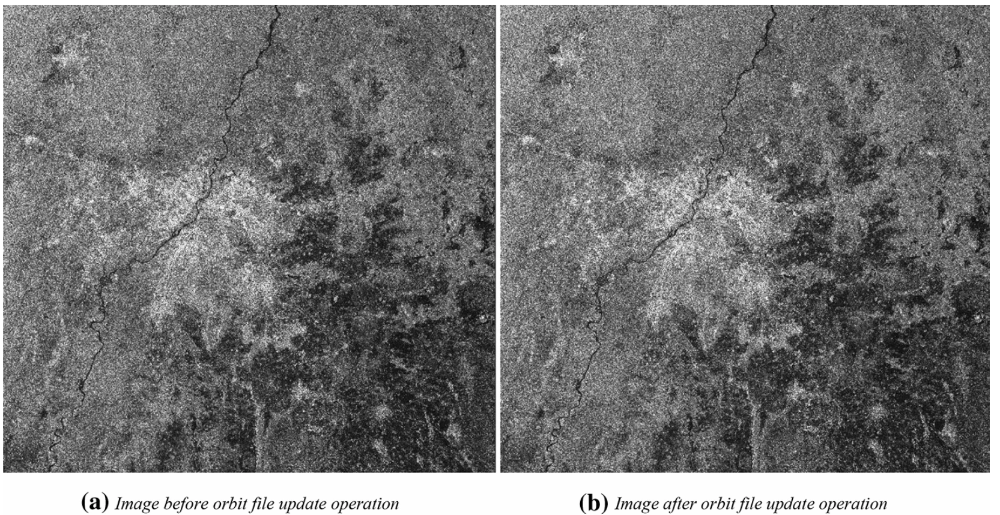

WEEK 4
Policy applications
This is a learning diary of CASA0023 WEEK 4, the lecture presentation is here, and the practical material is here.
1 Summary: lecture

1.1 Using data from sensors
Multi-temporal land cover mapping, Spectral signatures / libraries, Change detection, Vegetation stress, Precipitation, Elevation models, Temperature, Night time lights, Forest fire monitoring, Pollution monitoring, Drought indices, Informal housing detection, Water level data monitoring, Building or network outlineextraction, Environmental monitoring, Estimations of resources, Air pollution and LULC, Urban green space, Disaster response and preparedness, Droughts monitoring, Forest fires analysis
1.2 Synthetic Aperture Radar (SAR)
SAR background
- Active sensors
- Have surface texture data
- See through weather and clouds
- Different wavelengths - different applications
- Different ploarizations
SAR polarization
Polarization refers to the orientation of the plane in which the transmitted electromagnetic wave oscillates. While the orientation can occur at any angle, SAR sensors typically transmit linearly polarized. The horizontal polarization is indicated by the letter H, and the vertical polarization is indicated by V
Single= 1 horizontal (or vertical)Dual= transmits and receives both horizontal and verticalHH= emitted in horizontal (H) and received in horizontal (H)
Different surfaces respond differently to the polarizations
Rough scattering(e.g. bare earth) = most sensitive to VVVolume scattering(e.g. leaves) = cross, VH or HVDouble bounce(e.g. trees / buildings) = most sensitive to HH
Scattering can change based on wavelength, further penetration then the volume scattering will change
Amplitude (backscatter) and phase
A SAR signal has both amplitude (backscatter) and phase data
- Backscatter is the
portion of the outgoing radar signalthat the target redirects directly back towards the radar antenna - The higher the backscattered intensity = rougher the surface. It is
"unitless" - Can be converted to “
backscatter coefficient, orsigma nought”, measured indecibel (dB)units = normalised measure of the radar return from a distributed target - If the signal is from backscatter is not desired =
"clutter"
Backscatter (amplitude)
- Polarization
VV= surface roughnessVH= volume of surface (e.g. vegetation has a complex volume and can change the polarization)
- Permativity (dielectric constant) - how reflective is the property which means reflective back to the sensor. Water usually reflects it off elsewhere
- The return value, also remember the band (wavelength)
- Wind makes the water move and reflect back to the sensor (under VV)
Phase
- Location of wave on the cycle when it comes back to the sensor
SAR floods
Sensor: Sentinel-1 SAR
El Niño–Southern Oscillation (ENSO)phases but this is from Australian La Niña 2022- Trade winds from south america intensity
- Draw up cool deep waters and increase thermocline
- Temp difference increases, walker circulation intensifies - feedback loop
- More cloud + more rain + cyclones in West Pacific
Interferometry Synthetic Aperture Radar (InSAR)
- Take
two RADARobservations of the target (e.g. the ground) - Use the phase difference
Phase: “total number of cycles of the wave at any given distance from the transmitter, including the fractional part”Phase difference: SUBTRACT the values (measured phase values) at two different measurement points- Differential distance depends on the height of the terrain (topography)
- Used for creating
DEMs - Monitoring displacement of ground - earthquakes etc
Coherence Map: Coherence is defined as the degree of similarity of backscattering response (or reflection characteristic of as measured by the SAR sensor) between corresponding ground cells in both SAR image of an InSAR pair. Something is coherent when they are in phase (vibrate in unison)Differential Interferometry Synthetic Aperture Radar (DInSAR): “quantification of the ground displacement that occurred between the two acquisitions can be achieved” through a “differential interferogram”
SAR image

SAR applications
Damage detection, Urban area mapping, Urban flooding (lower backscatter coefficient), Landslides, Earthquakes, Data fusion / DEM creation
1.3 Monitoring forests + illegal logging
High-Resolution Global Maps of 21st-Century Forest Cover Change , Sourse: Hansen et al. (2013)
Sensor: Landsat (2000 to 2012)
Pre-processing
Landsat pre-processing steps
- Image resampling
- Conversion of
raw digital values (DN)totop of atmosphere (TOA)reflectance - Cloud/shadow/water screening and
quality assessment (QA) - Image normalization
The stack of QA layers was used to create a perpixel set of cloud-free image observations which in turn was employed to calculate timeseries spectral metrics
Creating metrics
Metrics represent a generic feature space that facilitates regionalscale mapping and have been used extensively with MODIS and AVHRR data
How to create metrics
Reflectance valuesrepresenting maximum, minimum and selected percentile values- Mean reflectance values for observations between selected percentiles
- Slope of linear regression of
band reflectance valueversusimage date - The
time-sequential MODIS 32-dayinputswere transformed to annual metrics to produce a more generalized feature space
Feature space= scattergram of two bands (or things that have been made into bands)- Can be used for very
basic classification- selecting the values that represent land cover
Training data (in supervised machine learning)
Training data to relate to the Landsat metrics were derived from image interpretation methods, including mapping of crown/no crown categories using very high spatial resolution data such as Quickbird imagery, existing percent tree cover layers derived from Landsat data, and global MODIS percent tree cover, rescaled using the higher spatial resolution percent tree cover data sets
Classification (supervised or unsupervised)
Decision trees are hierarchical classifiers (top down) that predict class membership by recursively partitioning (splitting) a data set into more homogeneous or less varying subsets, referred to as nodes
A random forest classifieris a collection of decision trees- Take something complex and force into many decisions =
if-elseconditions or also called divide and conquer - Often requires
hyperparametersto train the model (or control the learning process)DBSCAN(radius of points, Epsilon or MinPts - to make a cluster)Spatial weight matrix(type and then weight)
- Split the data into more and more homogeneous subsets (filtering!) this can be limited through
pre-pruning- set a number of iterations beforepost-pruning- reduce groups afterwards based on accuracy. Tree fully grows but will be overfit. (In post-pruning first, it goes deeper and deeper in the tree to build a complete tree. If the tree shows the overfitting problem then pruning is done as a post-pruning step. We use across-validation datato check the effect of our pruning. Using cross-validation data, it tests whether expanding a node will make an improvement or not. If it shows an improvement, then we can continue by expanding that node. But if it shows a reduction in accuracy then it should not be expanded i.e, the node should be converted to a leaf node.)

1.4 Integrating analysis
1.5 Global policy documents
New Urban Agenda
Standards and principles for planning, construction, development, management and urban improvement (Environmentally sustainable and resilient urban development subsection)
point 64: We also recognize that urban centres worldwide, especially in developing countries, often have characteristics that make them and their inhabitants especially vulnerable to the adverse impacts of climate change and other natural and human-made hazards, including earthquakes, extreme weather events, flooding, subsidence, storms, including dust and sand storms, heatwaves, water scarcity, droughts, water and air pollution, vector-borne diseases and sea level rise, which particularly affect coastal areas, delta regions and small island developing States, among others
point 65: We commit ourselves to facilitating the sustainable management of natural resources in cities and human settlements in a manner that protects and improves the urban ecosystem and environmental services, reduces greenhouse gas emissions and air pollution and promotes disaster risk reduction and management, by supporting the development of disaster risk reduction strategies and periodical assessments of disaster risk caused by natural and human-made hazards, including standards for risk levels
point 67: We commit ourselves to promoting the creation and maintenance of well-connected and well distributed networks of open, multipurpose, safe, inclusive, accessible, green and quality public spaces, to improving the resilience of cities to disasters and climate change, including floods, drought risks and heat waves to improving food security and nutrition, physical and mental health, and household and ambient air quality, to reducing noise and promoting attractive and liveable cities, human settlements and urban landscapes and to prioritizing the conservation of endemic species
Sustainable Development Goals (SDG): targets with measurable indicators for monitoring
Goal 11: Make cities and human settlements inclusive, safe, resilient and sustainable
Target 11.5: By 2030, significantly reduce the number of deaths and the number of people affected and substantially decrease the direct economic losses relative to global gross domestic product caused by disasters, including water-related disasters, with a focus on protecting the poor and people in vulnerable situations
- Monitoring 11.5
- 11.5.1 Number of deaths, missing persons and directly affected persons attributed to disasters per 100,000 population
- 11.5.2 Direct economic loss attributed to disasters in relation to global gross domestic product (GDP)
- 11.5.3 (a) Damage to critical infrastructure and (b) number of disruptions to basic services, attributed to disasters
- Data 11.5
- 11.5.1 (and .2) Data provider at national level is appointed Sendai Framework Focal Points. In most countries disaster data are collected by line ministries and national disaster loss databases are established and managed by special purpose agencies including national disaster management agencies, civil protection agencies, and meteorological agencies. The Sendai Framework Focal Points in each country are responsible of data reporting through the Sendai Framework Monitoring System.
- 11.5.3 National disaster loss database, reported to UNISDR…Not every country has a comparable national disaster loss database that is consistent with these guidelines (although current coverage exceeds 89 countries). Therefore, by 2020, it is expected that all countries will build/adjust national disaster loss databases according to the recommendations and guidelines by the OEIWG
Target 11.6: By 2030, reduce the adverse per capita environmental impact of cities, including by paying special attention to air quality and municipal and other waste management
- Indicator 11.6.2: Annual mean levels of fine particulate matter (e.g. PM2.5 and PM10) in cities (population weighted)
Target 11.7: By 2030, provide universal access to safe, inclusive and accessible, green and public spaces, in particular for women and children, older persons and persons with disabilities
- Indicator 11.7.1: Average share of the built-up area of cities that is open space for public use for all, by sex, age and persons with disabilities
1.6 Metropolitan policy documents
London
- Increasing efficiency and resilience: These environmental threats are real and present, and London must be prepared for them. London’s homes and infrastructure must be protected against the increasing likelihood of heatwaves, and developments must plan for a more integrated approach to water management, while minimising flood risk
- Policy SI 12 Flood risk management: Development Plans should use the Mayor’s Regional Flood Risk Appraisal and their Strategic Flood Risk Assessment as well as Local Flood Risk Management Strategies, where necessary, to identify areas where particular and cumulative flood risk issues exist and develop actions and policy approaches aimed at reducing these risks
OneNYC 2050
- References the sustainable development goals
- Has a hazards matrix
Cape Town: Cape Town Municipal Spatial Development Framework
- 2015-2018 “worst recorded drought in the city’s history, is a stark reminder that all cities will need to become more robust, resilient and efficient”
- “The Cape Town Spatial Development Framework (CTSDF) was approved in May 2012 and established a long-term spatial vision and policy framework for the City after extensive technical drafting and public participation.”
- “Careful management of development to avoid developing in high flood risk areas”
Ahmedabad: 2016 Heat Action Plan
- Awareness and outreach
- Early warning system
- Capacity of health care professionals
- Reduce heat exposure and promote adaptive mesaures …and mapping high risk areas, although mapping was removed later in the document (page 11)
1.7 Local policy documents
In most of the previous examples the documents were created by the metropolitan government, they set the strategic plan for the city and may have other responsibilities such as fire, policing, transport and development guidelines. Lower tier government then carries out or adheres to these goals, but there are variations to this rule
City of Cape Town
- The City of Cape Town is a metropolitan municipality or Category A municipality, there is no local municipality below it
- However, above the City of Cape Town is the Provincial government that is responsible for topics such as: agriculture, education, health and public housing. As such the City sets it’s own development plan and then implements it (whilst adhering to relevant Provincial topics)
New York
- City of New York is responsible for public education, correctional institutions, public safety, recreational facilities, sanitation, water supply, and welfare services
- 5 Boroughs under it act as spokespeople
- City Council has 51 members from districts of about 157,000
- New York City is responsible for setting and enacting the policy. State government is above it
2 Summary: practical
The summary of the policy and city I have selected.***
3 Application
How the remotely sensed data you sourced could be used to assist with contributing to the policy goal. How could the data be applied to solve the policy challenge.
4 Reflection
What I have learnt in relation to the policy, city and the application of the data.